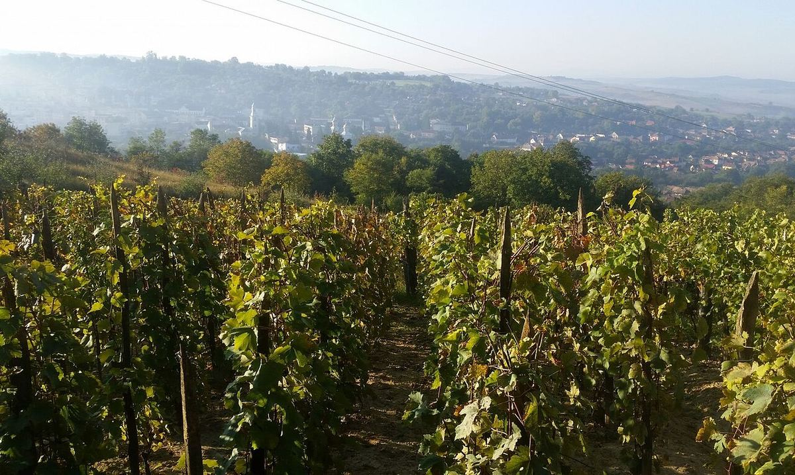

Roumanie
La Roumanie possède l’un des vignobles les plus étendus d’Europe, réparti autour de l’arc des Carpates et jusqu’à la mer Noire. À côté des cépages internationaux, elle conserve des raisins qui lui sont propres, comme la fetească neagră, la fetească albă, la tămâioasă românească ou la grasă de cotnari.

Histoire
La vigne est cultivée sur le territoire de l’actuelle Roumanie depuis l’Antiquité. Les Daces connaissaient déjà le vin, les colonies grecques de la côte de la mer Noire, comme Histria ou Tomis, en faisaient commerce, et après la conquête romaine de la Dacie la viticulture se répandit dans toute la région. Au Moyen Âge, les principautés de Moldavie et de Valachie développèrent d’importants vignobles, souvent liés aux monastères et à la noblesse ; Cotnari, en Moldavie, est traditionnellement associé au prince Étienne le Grand. En Transylvanie, les colons saxons favorisèrent la culture des cépages blancs.
Le phylloxéra arriva à la fin du XIXe siècle et imposa la replantation du vignoble sur porte-greffes américains, même si les hybrides producteurs directs se répandirent aussi et survivent encore dans les vignes familiales. Pendant la période communiste, la production fut organisée en grandes fermes d’État et en coopératives, tournées vers le volume et l’exportation vers les pays du bloc soviétique. Après 1989 commença un long processus de privatisation et de restructuration, accéléré par l’entrée dans l’Union européenne en 2007, qui a fait naître une nouvelle génération de domaines axés sur la qualité et la redécouverte des cépages autochtones.
Climat et sols
Le climat est continental, avec des hivers froids et des étés chauds, mais fortement nuancé par le relief. L’arc des Carpates protège les collines du sud et de l’est, où se trouvent beaucoup des meilleurs vignobles, tandis que la Transylvanie, à l’intérieur, est plus fraîche. La Dobroudja, entre le Danube et la mer Noire, est la zone la plus sèche et la plus ensoleillée. Les sols comprennent du tchernoziom, du lœss, des argiles, des marnes, des sables et des affleurements calcaires.
Régions
On distingue plusieurs grandes régions. En Moldavie, au nord-est, se trouvent notamment Cotnari, Iași, Huși, Odobești, Panciu et Cotești. Les collines de Munténie et d’Olténie, au sud des Carpates, comprennent Dealu Mare, connu pour ses rouges, et Drăgășani. La Transylvanie, avec le plateau des Târnave, est une terre de blancs frais et aromatiques. Le Banat et la Crișana, à l’ouest, comptent des secteurs comme Recaș et Miniș, et la Dobroudja, au sud-est, Murfatlar et Sarica Niculițel. Il existe aussi des vignobles sur les terrasses du Danube et sur les sables du sud.
Cépages et styles
Parmi les cépages autochtones se distinguent la fetească neagră, rouge aux arômes de fruits noirs et d’épices ; la fetească albă et la fetească regală, blancs très répandus ; la tămâioasă românească, de la famille des muscats, qui donne des vins aromatiques souvent doux ; la grasă de cotnari, base de vins doux de longue garde ; la frâncușă ; la crâmpoșie selecționată de Drăgășani et des rouges comme la băbească neagră et le novac. On cultive aussi le merlot, le cabernet-sauvignon, le pinot noir, le sauvignon blanc, l’aligoté, le muscat ottonel et le riesling dit « italien », c’est-à-dire le welschriesling. Le goût roumain privilégiait traditionnellement les vins demi-secs et moelleux, mais la production de vins secs a fortement progressé.
Réglementation
La classification distingue les vins sans indication géographique, les vins à indication géographique (IG) et les vins à dénomination d’origine contrôlée (Denumire de Origine Controlată, DOC). Au sein des DOC existent trois mentions selon la maturité du raisin : DOC-CMD (cules la maturitate deplină, vendange à pleine maturité), DOC-CT (cules târziu, vendange tardive) et DOC-CIB (cules la înnobilarea boabelor, vendange de raisins atteints de pourriture noble). Les étiquettes indiquent en outre la teneur en sucre : sec, demisec, demidulce ou dulce.
Régions et appellations
Dealu Mare
Dénomination d’origine contrôlée (DOC) · Dealu Mare, « la grande colline », est une bande de coteaux exposés au sud dans les contreforts des Carpates, au nord de Bucarest. C’est la zone de vins rouges la plus réputée de Roumanie, avec fetească neagră, merlot, cabernet-sauvignon et pinot noir.
Cotnari
Dénomination d’origine contrôlée (DOC) · Cotnari, dans les collines du département de Iași, en Moldavie roumaine, est l’appellation historique des blancs liquoreux de Roumanie. Elle repose sur quatre cépages locaux : grasă de cotnari, tămâioasă românească, fetească albă et frâncușă.